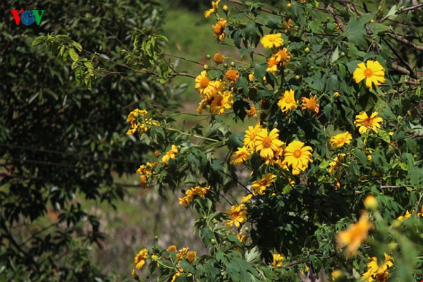
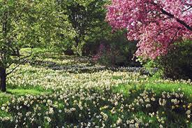
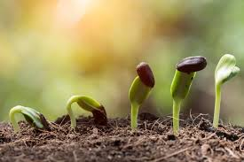
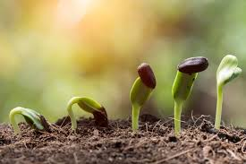
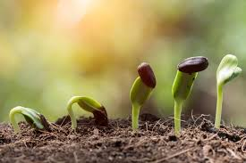
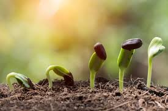
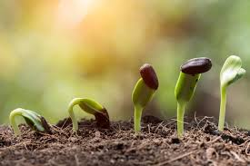

Core topics of Botany

Cytology
:- cell structure.
Epigenetics
:- Control of gene expression.
Paleobotany
:- Study of fossil plants and plant evolution.
Palynology
:- Pollen and spores.
Plant biochemistry
:- Chemical processes of primary and secondary metabolism.
Phenology
:- timing of germination, flowering and fruiting.
Phytochemistry
:- Plant secondary chemistry and chemical processes.
Phytogeography
:- Plant Biogeography, the study of plant distributions.
Phytosociology
:- Plant communities and interactions.
Plant anatomy
:- Structure of plant cells and tissues.
Plant ecology
:- Role and function of plants in the environment.
Plant evolutionary developmental biology
:- Plant development from an evolutionary perspective.
Plant genetics
:- Genetic inheritance in plants.
Plant morphology
:- Structure of plants.
Plant physiology
:- Life functions of plants.
Plant reproduction
:- Processes of plant reproduction.
Plant systematics
:- Classification and naming of plants.
Plant taxonomy
:- Classification and naming of plants.


 


